先把 Docker说清楚
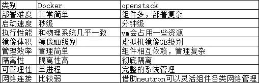
简介
1、了解Docker的前生LXC
LXC为Linux Container的简写。可以提供轻量级的虚拟化，以便隔离进程和资源，而且不需要提供指令解释机制以及全虚拟化的其他复杂性。相当于C++中的NameSpace。容器有效地将由单个操作系统管理的资源划分到孤立的组中，以更好地在孤立的组之间平衡有冲突的资源使用需求。
与传统虚拟化技术相比，它的优势在于：
（1）与宿主机使用同一个内核，性能损耗小；
（2）不需要指令级模拟；
（3）不需要即时(Just-in-time)编译；
（4）容器可以在CPU核心的本地运行指令，不需要任何专门的解释机制；
（5）避免了准虚拟化和系统调用替换中的复杂性；
（6）轻量级隔离，在隔离的同时还提供共享机制，以实现容器与宿主机的资源共享。
总结：Linux Container是一种轻量级的虚拟化的手段。
Linux Container提供了在单一可控主机节点上支持多个相互隔离的server container同时执行的机制。Linux Container有点像chroot，提供了一个拥有自己进程和网络空间的虚拟环境，但又有别于虚拟机，因为lxc是一种操作系统层次上的资源的虚拟化。
2、LXC与docker什么关系？
docker并不是LXC替代品，docker底层使用了LXC来实现，LXC将linux进程沙盒化，使得进程之间相互隔离，并且能够课哦内阁制各进程的资源分配。
在LXC的基础之上，docker提供了一系列更强大的功能。
3、什么是docker
docker是一个开源的应用容器引擎，基于go语言开发并遵循了apache2.0协议开源。
docker可以让开发者打包他们的应用以及依赖包到一个轻量级、可移植的容器中，然后发布到任何流行的linux服务器，也可以实现虚拟化。
容器是完全使用沙箱机制，相互之间不会有任何接口（类iphone的app），并且容器开销极其低。
4、docker官方文档
5、为什么docker越来越受欢迎
官方话语：
-
容器化越来越受欢迎，因为容器是：
-
- 灵活：即使是最复杂的应用也可以集装箱化。
- 轻量级：容器利用并共享主机内核。
- 可互换：您可以即时部署更新和升级。
- 便携式：您可以在本地构建，部署到云，并在任何地方运行。
- 可扩展：您可以增加并自动分发容器副本。
- 可堆叠：您可以垂直和即时堆叠服务。
-
镜像和容器（contalners）
通过镜像启动一个容器，一个镜像是一个可执行的包，其中包括运行应用程序所需要的所有内容包含代码，运行时间，库、环境变量、和配置文件。
容器是镜像的运行实例，当被运行时有镜像状态和用户进程，可以使用docker ps 查看。
- 容器和虚拟机
容器时在linux上本机运行，并与其他容器共享主机的内核，它运行的一个独立的进程，不占用其他任何可执行文件的内存，非常轻量。
虚拟机运行的是一个完成的操作系统，通过虚拟机管理程序对主机资源进行虚拟访问，相比之下需要的资源更多。
6、docker版本
Docker Community Edition（CE）社区版
Enterprise Edition(EE) 商业版
7、docker和openstack的几项对比
8、容器在内核中支持2种重要技术
docker本质就是宿主机的一个进程，docker是通过namespace实现资源隔离，通过cgroup实现资源限制，通过写时复制技术（copy-on-write）实现了高效的文件操作（类似虚拟机的磁盘比如分配500g并不是实际占用物理磁盘500g）
1）namespaces 名称空间
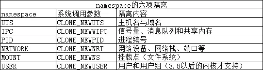
2）control Group 控制组
cgroup的特点是：
- cgroup的api以一个伪文件系统的实现方式，用户的程序可以通过文件系统实现cgroup的组件管理
- cgroup的组件管理操作单元可以细粒度到线程级别，另外用户可以创建和销毁cgroup，从而实现资源载分配和再利用
- 所有资源管理的功能都以子系统的方式实现，接口统一子任务创建之初与其父任务处于同一个cgroup的控制组
四大功能：
- 资源限制：可以对任务使用的资源总额进行限制
- 优先级分配：通过分配的cpu时间片数量以及磁盘IO带宽大小，实际上相当于控制了任务运行优先级
- 资源统计：可以统计系统的资源使用量，如cpu时长，内存用量等
- 任务控制：cgroup可以对任务执行挂起、恢复等操作
9、了解docker三个重要概念
1）image镜像
docker镜像就是一个只读模板，比如，一个镜像可以包含一个完整的centos，里面仅安装apache或用户的其他应用，镜像可以用来创建docker容器，另外docker提供了一个很简单的机制来创建镜像或者更新现有的镜像，用户甚至可以直接从其他人那里下周一个已经做好的镜像来直接使用
2）container容器
docker利用容器来运行应用，容器是从镜像创建的运行实例，它可以被启动，开始、停止、删除、每个容器都是互相隔离的，保证安全的平台，可以吧容器看做是要给简易版的linux环境（包括root用户权限、镜像空间、用户空间和网络空间等）和运行再其中的应用程序
3）repostory仓库
仓库是集中存储镜像文件的沧桑，registry是仓库主从服务器，实际上参考注册服务器上存放着多个仓库，每个仓库中又包含了多个镜像，每个镜像有不同的标签（tag）
仓库分为两种，公有参考，和私有仓库，最大的公开仓库是docker Hub，存放了数量庞大的镜像供用户下周，国内的docker pool，这里仓库的概念与Git类似，registry可以理解为github这样的托管服务。
10、docker的主要用途
官方就是Bulid 、ship、run any app/any where，编译、装载、运行、任何app/在任意地放都能运行。
就是实现了应用的封装、部署、运行的生命周期管理只要在glibc的环境下，都可以运行。
运维生成环境中：docker化。
- 发布服务不用担心服务器的运行环境，所有的服务器都是自动分配docker，自动部署，自动安装，自动运行
- 再不用担心其他服务引擎的磁盘问题，cpu问题，系统问题了
- 资源利用更出色
- 自动迁移，可以制作镜像，迁移使用自定义的镜像即可迁移，不会出现什么问题
- 管理更加方便了
11、docker改变了什么
- 面向产品：产品交付
- 面向开发：简化环境配置
- 面向测试：多版本测试
- 面向运维：环境一致性
- 面向架构：自动化扩容（微服务）
docker架构
1、总体架构
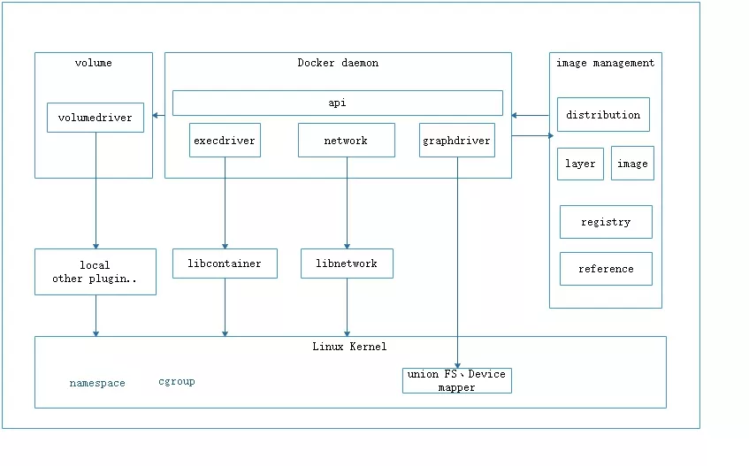
- distribution 负责与docker registry交互，上传洗澡镜像以及v2 registry 有关的源数据
- registry负责docker registry有关的身份认证、镜像查找、镜像验证以及管理registry mirror等交互操作
- image 负责与镜像源数据有关的存储、查找，镜像层的索引、查找以及镜像tar包有关的导入、导出操作
- reference负责存储本地所有镜像的repository和tag名，并维护与镜像id之间的映射关系
- layer模块负责与镜像层和容器层源数据有关的增删改查，并负责将镜像层的增删改查映射到实际存储镜像层文件的graphdriver模块
- graghdriver是所有与容器镜像相关操作的执行者
2、docker架构2
如果觉得上面架构图比较乱可以看这个架构：
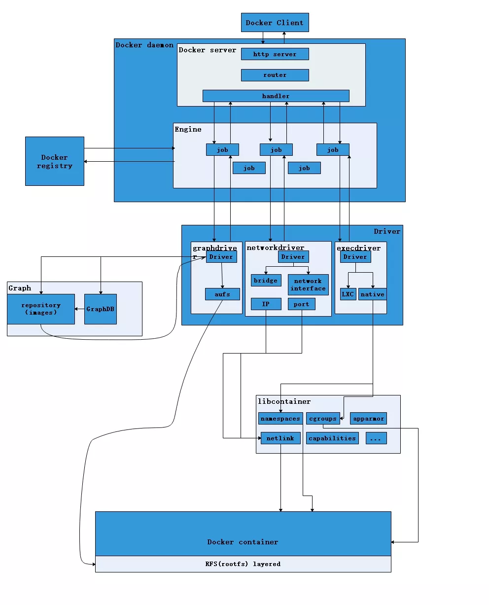
从上图不难看出，用户是使用Docker Client与Docker Daemon建立通信，并发送请求给后者。
而Docker Daemon作为Docker架构中的主体部分，首先提供Server的功能使其可以接受Docker Client的请求；而后Engine执行Docker内部的一系列工作，每一项工作都是以一个Job的形式的存在。
Job的运行过程中，当需要容器镜像时，则从Docker Registry中下载镜像，并通过镜像管理驱动graphdriver将下载镜像以Graph的形式存储；当需要为Docker创建网络环境时，通过网络管理驱动networkdriver创建并配置Docker容器网络环境；当需要限制Docker容器运行资源或执行用户指令等操作时，则通过execdriver来完成。
而libcontainer是一项独立的容器管理包，networkdriver以及execdriver都是通过libcontainer来实现具体对容器进行的操作。当执行完运行容器的命令后，一个实际的Docker容器就处于运行状态，该容器拥有独立的文件系统，独立并且安全的运行环境等。
3、docker架构3
再来看看另外一个架构，这个个架构就简单清晰指明了server/client交互，容器和镜像、数据之间的一些联系。
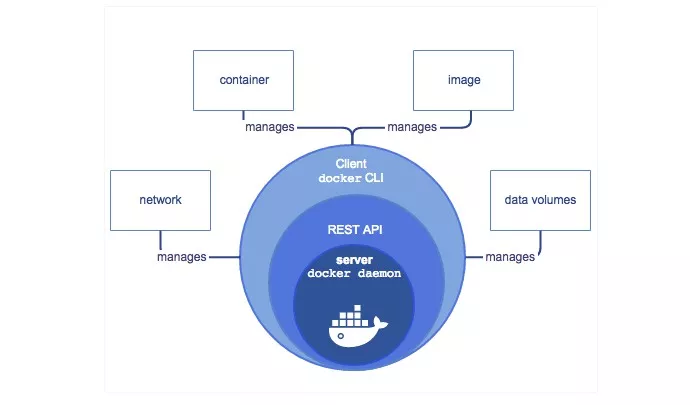
这个架构图更加清晰了架构
docker daemon就是docker的守护进程即server端，可以是远程的，也可以是本地的，这个不是C/S架构吗，客户端Docker client 是通过rest api进行通信。
docker cli 用来管理容器和镜像，客户端提供一个只读镜像，然后通过镜像可以创建多个容器，这些容器可以只是一个RFS（Root file system根文件系统），也可以ishi一个包含了用户应用的RFS，容器再docker client中只是要给进程，两个进程之间互不可见。
用户不能与server直接交互，但可以通过与容器这个桥梁来交互，由于是操作系统级别的虚拟技术，中间的损耗几乎可以不计。
docker架构2各个模块的功能（带完善）
主要的模块有：Docker Client、Docker Daemon、Docker Registry、Graph、Driver、libcontainer以及Docker container。
1、docker client
docker client 是docker架构中用户用来和docker daemon建立通信的客户端，用户使用的可执行文件为docker，通过docker命令行工具可以发起众多管理container的请求。
docker client可以通过一下三宗方式和docker daemon建立通信：tcp://host:port;unix:path_to_socket;fd://socketfd。，docker client可以通过设置命令行flag参数的形式设置安全传输层协议(TLS)的有关参数，保证传输的安全性。
docker client发送容器管理请求后，由docker daemon接受并处理请求，当docker client 接收到返回的请求相应并简单处理后，docker client 一次完整的生命周期就结束了，当需要继续发送容器管理请求时，用户必须再次通过docker可以执行文件创建docker client。
2、docker daemon
docker daemon 是docker架构中一个常驻在后台的系统进程，功能是：接收处理docker client发送的请求。该守护进程在后台启动一个server，server负载接受docker client发送的请求；接受请求后，server通过路由与分发调度，找到相应的handler来执行请求。
docker daemon启动所使用的可执行文件也为docker，与docker client启动所使用的可执行文件docker相同，在docker命令执行时，通过传入的参数来判别docker daemon与docker client。
docker daemon的架构可以分为：docker server、engine、job。daemon
3、docker server
docker server在docker架构中时专门服务于docker client的server，该server的功能时：接受并调度分发docker client发送的请求，架构图如下：
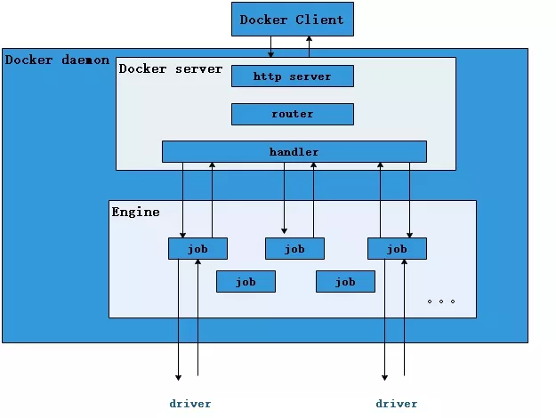
在Docker的启动过程中，通过包gorilla/mux（golang的类库解析），创建了一个mux.Router，提供请求的路由功能。在Golang中，gorilla/mux是一个强大的URL路由器以及调度分发器。该mux.Router中添加了众多的路由项，每一个路由项由HTTP请求方法（PUT、POST、GET或DELETE）、URL、Handler三部分组成。
若Docker Client通过HTTP的形式访问Docker Daemon，创建完mux.Router之后，Docker将Server的监听地址以及mux.Router作为参数，创建一个httpSrv=http.Server{}，最终执行httpSrv.Serve()为请求服务。
在Server的服务过程中，Server在listener上接受Docker Client的访问请求，并创建一个全新的goroutine来服务该请求。在goroutine中，首先读取请求内容，然后做解析工作，接着找到相应的路由项，随后调用相应的Handler来处理该请求，最后Handler处理完请求之后回复该请求。
需要注意的是：Docker Server的运行在Docker的启动过程中，是靠一个名为”serveapi”的job的运行来完成的。原则上，Docker Server的运行是众多job中的一个，但是为了强调Docker Server的重要性以及为后续job服务的重要特性，将该”serveapi”的job单独抽离出来分析，理解为Docker Server。
4、engine
Engine是Docker架构中的运行引擎，同时也Docker运行的核心模块。它扮演Docker container存储仓库的角色，并且通过执行job的方式来操纵管理这些容器。
在Engine数据结构的设计与实现过程中，有一个handler对象。该handler对象存储的都是关于众多特定job的handler处理访问。举例说明，Engine的handler对象中有一项为：{“create”: daemon.ContainerCreate,}，则说明当名为”create”的job在运行时，执行的是daemon.ContainerCreate的handler。
5、job
一个Job可以认为是Docker架构中Engine内部最基本的工作执行单元。Docker可以做的每一项工作，都可以抽象为一个job。例如：在容器内部运行一个进程，这是一个job；创建一个新的容器，这是一个job，从Internet上下载一个文档，这是一个job；包括之前在Docker Server部分说过的，创建Server服务于HTTP的API，这也是一个job，等等。
Job的设计者，把Job设计得与Unix进程相仿。比如说：Job有一个名称，有参数，有环境变量，有标准的输入输出，有错误处理，有返回状态等。
6、docker registry
Docker Registry是一个存储容器镜像的仓库。而容器镜像是在容器被创建时，被加载用来初始化容器的文件架构与目录。
在Docker的运行过程中，Docker Daemon会与Docker Registry通信，并实现搜索镜像、下载镜像、上传镜像三个功能，这三个功能对应的job名称分别为”search”，”pull” 与 “push”。
其中，在Docker架构中，Docker可以使用公有的Docker Registry，即大家熟知的Docker Hub，如此一来，Docker获取容器镜像文件时，必须通过互联网访问Docker Hub；同时Docker也允许用户构建本地私有的Docker Registry，这样可以保证容器镜像的获取在内网完成。
7、Graph
Graph在Docker架构中扮演已下载容器镜像的保管者，以及已下载容器镜像之间关系的记录者。一方面，Graph存储着本地具有版本信息的文件系统镜像，另一方面也通过GraphDB记录着所有文件系统镜像彼此之间的关系。
Graph的架构如下：
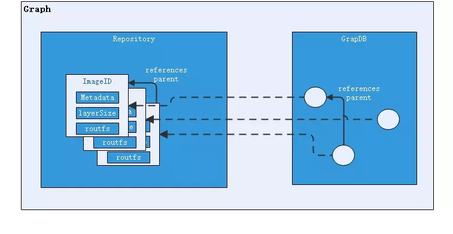
其中，GraphDB是一个构建在SQLite之上的小型图数据库，实现了节点的命名以及节点之间关联关系的记录。它仅仅实现了大多数图数据库所拥有的一个小的子集，但是提供了简单的接口表示节点之间的关系。
同时在Graph的本地目录中，关于每一个的容器镜像，具体存储的信息有：该容器镜像的元数据，容器镜像的大小信息，以及该容器镜像所代表的具体rootfs。
8、driver
Driver是Docker架构中的驱动模块。通过Driver驱动，Docker可以实现对Docker容器执行环境的定制。由于Docker运行的生命周期中，并非用户所有的操作都是针对Docker容器的管理，另外还有关于Docker运行信息的获取，Graph的存储与记录等。因此，为了将Docker容器的管理从Docker Daemon内部业务逻辑中区分开来，设计了Driver层驱动来接管所有这部分请求。
在Docker Driver的实现中，可以分为以下三类驱动：graphdriver、networkdriver和execdriver。
graphdriver主要用于完成容器镜像的管理，包括存储与获取。即当用户需要下载指定的容器镜像时，graphdriver将容器镜像存储在本地的指定目录；同时当用户需要使用指定的容器镜像来创建容器的rootfs时，graphdriver从本地镜像存储目录中获取指定的容器镜像。
在graphdriver的初始化过程之前，有4种文件系统或类文件系统在其内部注册，它们分别是aufs、btrfs、vfs和devmapper。而Docker在初始化之时，通过获取系统环境变量”DOCKER_DRIVER”来提取所使用driver的指定类型。而之后所有的graph操作，都使用该driver来执行。
graphdriver的架构如下：
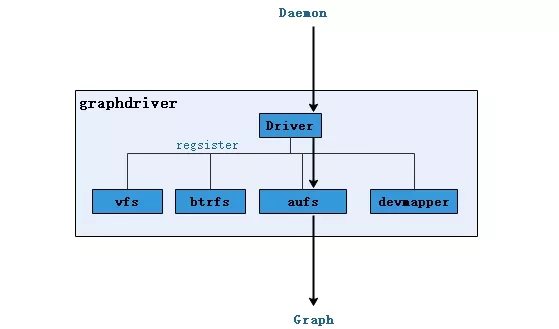
networkdriver的用途是完成Docker容器网络环境的配置，其中包括Docker启动时为Docker环境创建网桥；Docker容器创建时为其创建专属虚拟网卡设备；以及为Docker容器分配IP、端口并与宿主机做端口映射，设置容器防火墙策略等。networkdriver的架构如下：
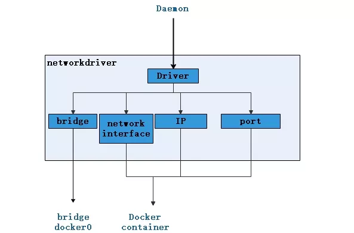
execdriver作为Docker容器的执行驱动，负责创建容器运行命名空间，负责容器资源使用的统计与限制，负责容器内部进程的真正运行等。在execdriver的实现过程中，原先可以使用LXC驱动调用LXC的接口，来操纵容器的配置以及生命周期，而现在execdriver默认使用native驱动，不依赖于LXC。
具体体现在Daemon启动过程中加载的ExecDriverflag参数，该参数在配置文件已经被设为”native”。这可以认为是Docker在1.2版本上一个很大的改变，或者说Docker实现跨平台的一个先兆。execdriver架构如下：
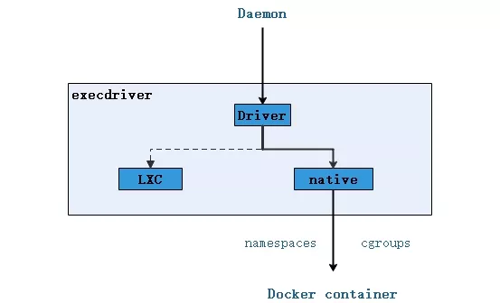
9、libcontainer
libcontainer是Docker架构中一个使用Go语言设计实现的库，设计初衷是希望该库可以不依靠任何依赖，直接访问内核中与容器相关的API。
正是由于libcontainer的存在，Docker可以直接调用libcontainer，而最终操纵容器的namespace、cgroups、apparmor、网络设备以及防火墙规则等。这一系列操作的完成都不需要依赖LXC或者其他包。libcontainer架构如下：
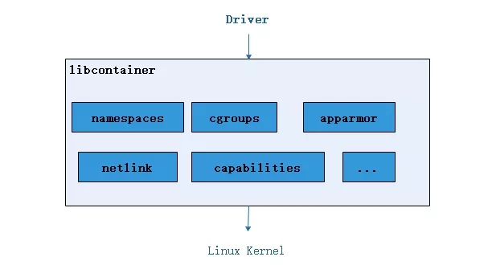
另外，libcontainer提供了一整套标准的接口来满足上层对容器管理的需求。或者说，libcontainer屏蔽了Docker上层对容器的直接管理。又由于libcontainer使用Go这种跨平台的语言开发实现，且本身又可以被上层多种不同的编程语言访问，因此很难说，未来的Docker就一定会紧紧地和Linux捆绑在一起。而于此同时，Microsoft在其著名云计算平台Azure中，也添加了对Docker的支持，可见Docker的开放程度与业界的火热度。
暂不谈Docker，由于libcontainer的功能以及其本身与系统的松耦合特性，很有可能会在其他以容器为原型的平台出现，同时也很有可能催生出云计算领域全新的项目。
10、docker container
Docker container（Docker容器）是Docker架构中服务交付的最终体现形式。
Docker按照用户的需求与指令，订制相应的Docker容器：
- 用户通过指定容器镜像，使得Docker容器可以自定义rootfs等文件系统；
- 用户通过指定计算资源的配额，使得Docker容器使用指定的计算资源；
- 用户通过配置网络及其安全策略，使得Docker容器拥有独立且安全的网络环境；
- 用户通过指定运行的命令，使得Docker容器执行指定的工作。
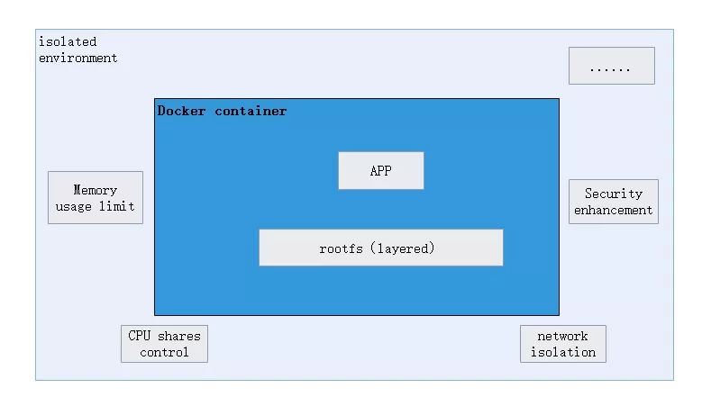
理解容器和镜像
这篇文章希望能够帮助读者深入理解Docker的命令，还有容器（container）和镜像（image）之间的区别，并深入探讨容器和运行中的容器之间的区别。
{kind=link}
当我对Docker技术还是一知半解的时候，我发现理解Docker的命令非常困难。于是，我花了几周的时间来学习Docker的工作原理，更确 切地说，是关于Docker统一文件系统（the union file system）的知识，然后回过头来再看Docker的命令，一切变得顺理成章，简单极了。
题外话：就我个人而言，掌握一门技术并合理使用它的最好办法就是深入理解这项技术背后的工作原理。通常情况 下，一项新技术的诞生常常会伴随着媒体的大肆宣传和炒作，这使得用户很难看清技术的本质。更确切地说，新技术总是会发明一些新的术语或者隐喻词来帮助宣 传，这在初期是非常有帮助的，但是这给技术的原理蒙上了一层砂纸，不利于用户在后期掌握技术的真谛。
Git就是一个很好的例子。我之前不能够很好的使用Git，于是我花了一段时间去学习Git的原理，直到这时，我才真正明白了Git的用法。我坚信只有真正理解Git内部原理的人才能够掌握这个工具。
Image Definition
镜像（Image）就是一堆只读层（read-only layer）的统一视角，也许这个定义有些难以理解，下面的这张图能够帮助读者理解镜像的定义。
{kind=link}
从左边我们看到了多个只读层，它们重叠在一起。除了最下面一层，其它层都会有一个指针指向下一层。这些层是Docker内部的实现细节，并且能够 在主机（译者注：运行Docker的机器）的文件系统上访问到。统一文件系统（union file system）技术能够将不同的层整合成一个文件系统，为这些层提供了一个统一的视角，这样就隐藏了多层的存在，在用户的角度看来，只存在一个文件系统。 我们可以在图片的右边看到这个视角的形式。
你可以在你的主机文件系统上找到有关这些层的文件。需要注意的是，在一个运行中的容器内部，这些层是不可见的。在我的主机上，我发现它们存在于/var/lib/docker/aufs目录下。
sudo tree -L 1 /var/lib/docker/
/var/lib/docker/
├── aufs
├── containers
├── graph
├── init
├── linkgraph.db
├── repositories-aufs
├── tmp
├── trust
└── volumes
7 directories, 2 files
Container Definition
容器（container）的定义和镜像（image）几乎一模一样，也是一堆层的统一视角，唯一区别在于容器的最上面那一层是可读可写的。
{kind=link}
细心的读者可能会发现，容器的定义并没有提及容器是否在运行，没错，这是故意的。正是这个发现帮助我理解了很多困惑。
要点：容器 = 镜像 + 可读层。并且容器的定义并没有提及是否要运行容器。
接下来，我们将会讨论运行态容器。
Running Container Definition
一个运行态容器（running container）被定义为一个可读写的统一文件系统加上隔离的进程空间和包含其中的进程。下面这张图片展示了一个运行中的容器。
{kind=link}
正是文件系统隔离技术使得Docker成为了一个前途无量的技术。一个容器中的进程可能会对文件进行修改、删除、创建，这些改变都将作用于可读写层（read-write layer）。下面这张图展示了这个行为。
{kind=link}
我们可以通过运行以下命令来验证我们上面所说的：
docker run ubuntu touch happiness.txt
即便是这个ubuntu容器不再运行，我们依旧能够在主机的文件系统上找到这个新文件。
find / -name happiness.txt
/var/lib/docker/aufs/diff/860a7b...889/happiness.txt
Image Layer Definition
为了将零星的数据整合起来，我们提出了镜像层（image layer）这个概念。下面的这张图描述了一个镜像层，通过图片我们能够发现一个层并不仅仅包含文件系统的改变，它还能包含了其他重要信息。
{kind=link}
元数据（metadata）就是关于这个层的额外信息，它不仅能够让Docker获取运行和构建时的信息，还包括父层的层次信息。需要注意，只读层和读写层都包含元数据。
{kind=link}
除此之外，每一层都包括了一个指向父层的指针。如果一个层没有这个指针，说明它处于最底层。
{kind=link}
Metadata Location: 我发现在我自己的主机上，镜像层（image layer）的元数据被保存在名为”json”的文件中，比如说：
/var/lib/docker/graph/e809f156dc985.../json
e809f156dc985…就是这层的id
一个容器的元数据好像是被分成了很多文件，但或多或少能够在/var/lib/docker/containers/目录下找到，就是一个可读层的id。这个目录下的文件大多是运行时的数据，比如说网络，日志等等。
全局理解（Tying It All Together）
现在，让我们结合上面提到的实现细节来理解Docker的命令。
docker create
{kind=link}
docker create 命令为指定的镜像（image）添加了一个可读写层，构成了一个新的容器。注意，这个容器并没有运行。
{kind=link}
docker start
{kind=link}
Docker start命令为容器文件系统创建了一个进程隔离空间。注意，每一个容器只能够有一个进程隔离空间。
docker run
{kind=link}
看到这个命令，读者通常会有一个疑问：docker start 和 docker run命令有什么区别。
{kind=link}
从图片可以看出，docker run 命令先是利用镜像创建了一个容器，然后运行这个容器。这个命令非常的方便，并且隐藏了两个命令的细节，但从另一方面来看，这容易让用户产生误解。
题外话：继续我们之前有关于Git的话题，我认为docker run命令类似于git pull命令。git pull命令就是git fetch 和 git merge两个命令的组合，同样的，docker run就是docker create和docker start两个命令的组合。
docker ps
{kind=link}
docker ps 命令会列出所有运行中的容器。这隐藏了非运行态容器的存在，如果想要找出这些容器，我们需要使用下面这个命令。
docker ps –a
{kind=link}
docker ps –a命令会列出所有的容器，不管是运行的，还是停止的。
docker images
{kind=link}
docker images命令会列出了所有顶层（top-level）镜像。实际上，在这里我们没有办法区分一个镜像和一个只读层，所以我们提出了top-level 镜像。只有创建容器时使用的镜像或者是直接pull下来的镜像能被称为顶层（top-level）镜像，并且每一个顶层镜像下面都隐藏了多个镜像层。
docker images –a
{kind=link}
docker images –a命令列出了所有的镜像，也可以说是列出了所有的可读层。如果你想要查看某一个image-id下的所有层，可以使用docker history来查看。
docker stop
{kind=link}
docker stop命令会向运行中的容器发送一个SIGTERM的信号，然后停止所有的进程。
docker kill
{kind=link}
docker kill 命令向所有运行在容器中的进程发送了一个不友好的SIGKILL信号。
docker pause
{kind=link}
docker stop和docker kill命令会发送UNIX的信号给运行中的进程，docker pause命令则不一样，它利用了cgroups的特性将运行中的进程空间暂停。具体的内部原理你可以在这里找到：https://www.kernel.org/doc/Doc … m.txt，但是这种方式的不足之处在于发送一个SIGTSTP信号对于进程来说不够简单易懂，以至于不能够让所有进程暂停。
docker rm
{kind=link}
docker rm命令会移除构成容器的可读写层。注意，这个命令只能对非运行态容器执行。
docker rmi
{kind=link}
docker rmi 命令会移除构成镜像的一个只读层。你只能够使用docker rmi来移除最顶层（top level layer）（也可以说是镜像），你也可以使用-f参数来强制删除中间的只读层。
docker commit
{kind=link}
docker commit命令将容器的可读写层转换为一个只读层，这样就把一个容器转换成了不可变的镜像。
{kind=link}
docker build
{kind=link}
docker build命令非常有趣，它会反复的执行多个命令。
{kind=link}
我们从上图可以看到，build命令根据Dockerfile文件中的FROM指令获取到镜像，然后重复地1）run（create和start）、2）修改、3）commit。在循环中的每一步都会生成一个新的层，因此许多新的层会被创建。
docker exec
{kind=link}
docker exec 命令会在运行中的容器执行一个新进程。
docker inspect or
{kind=link}
docker inspect命令会提取出容器或者镜像最顶层的元数据。
docker save
{kind=link}
docker save命令会创建一个镜像的压缩文件，这个文件能够在另外一个主机的Docker上使用。和export命令不同，这个命令为每一个层都保存了它们的元数据。这个命令只能对镜像生效。
docker export
{kind=link}
docker export命令创建一个tar文件，并且移除了元数据和不必要的层，将多个层整合成了一个层，只保存了当前统一视角看到的内容（译者注：expoxt后 的容器再import到Docker中，通过docker images –tree命令只能看到一个镜像；而save后的镜像则不同，它能够看到这个镜像的历史镜像）。
docker history
{kind=link}
docker history命令递归地输出指定镜像的历史镜像。
查看docker运行信息
docker inspect 会返回一个 JSON 文件记录着 Docker 容器的配置和状态信息
docker inspect NAMES
# 查看容器所有状态信息；
docker inspect --format='{{.NetworkSettings.IPAddress}}' ID/NAMES
# 查看 容器ip 地址
docker inspect --format '{{.Name}} {{.State.Running}}' NAMES
# 容器运行状态
查看进程信息
docker top NAMES
查看端口；(使用容器ID 或者 容器名称)
docker port ID/NAMES
查看IP地址 也可以直接通过用 远程执行命令也可以（Centos7）；
docker exec -it ID/NAMES ip addr
docker 的安装及使用
简单介绍
docker 是一个开源的软件部署解决方案 docker 也是轻量级的应用容器框架 docker 可以打包、发布、运行任何的应用
安装
- 阿里云
curl -fsSL https://get.docker.com | bash -s docker --mirror Aliyun
- daocloud
curl -sSL https://get.daocloud.io/docker | sh
安装后将会自动重启
卸载
sudo apt-get remove docker docker-engine
rm -fr /var/lib/docker/
配置加速器
下面是我的配置，实际使用需要根据自己的账号去查看自己的地址
curl -sSL https://get.daocloud.io/daotools/set_mirror.sh | sh -s http://ced808ab.m.daocloud.io
sudo systemctl restart docker.service
sudo mkdir -p /etc/docker
sudo tee /etc/docker/daemon.json <<-'EOF'
{
"registry-mirrors": ["https://dist7hw1.mirror.aliyuncs.com"]
}
EOF
sudo systemctl daemon-reload
sudo systemctl restart docker
基础命令
-
查看版本:
docker -v//文章使用版本：Docker version 18.06.0-ce, build 0ffa825 -
查看镜像：
docker images -
查看容器：
docker ps -
启动 docker 服务：
sudo service docker start -
停止 docker 服务：
sudo service docker stop -
重启 docker 服务：
sudo service docker restart -
进入一个运行中的容器：
docker exec -it 容器Id /bin/bash
通过 Dockerfile 使用 nginx
通过下面的一个脚本可以简单快速的创建一个镜像并运行起来 大概看下应该就可以大概明白镜像的基本使用了
echo '0.创建测试目录及代码'
mkdir dockerfiletest
cd dockerfiletest
mkdir dist
echo 'hello world'>./dist/index.html
echo '1.创建Dockerfile'
echo '
From daocloud.io/library/nginx:1.13.0-alpine
COPY dist/ /usr/share/nginx/html/
'>./Dockerfile
echo '2.构建镜像'
docker build -t dockerfiletest .
echo '3.运行镜像'
docker run -p 3344:80 dockerfiletest
下面分步拆解下
1.添加 Dockerfile 文件
详细请参考：https://hub.daocloud.io/repos/2b7310fb-1a50-48f2-9586-44622a2d1771
html 的简单部署
From daocloud.io/library/nginx:1.13.0-alpine
# 将发布目录的文件拷贝到镜像中
COPY dist/ /usr/share/nginx/html/
若要使用自己的配置脚本，比如 vue 的配置,可以将自己的配置文件复制到容器中
From daocloud.io/library/nginx:1.13.0-alpine
# 删除镜像中 nginx 的默认配置
RUN rm /etc/nginx/conf.d/default.conf
# 复制 default.conf 到镜像中
ADD default.conf /etc/nginx/conf.d/
# 将发布目录的文件拷贝到镜像中
COPY dist/ /usr/share/nginx/html/
nginx 中 vue history 模式的配置 如下，可参考
server {
listen 80;
location / {
root /usr/share/nginx/html/;
index index.html;
try_files $uri $uri/ /index.html;
}
}
若是将/usr/share/nginx/html/和/etc/nginx/conf.d/挂载到本地，这样应该能够灵活使用 docker 安装的 nginx 了(未实践过)
2.构建镜像
构建参数说明参考：http://www.runoob.com/docker/docker-build-command.html
docker build -t docker-nginx-test .
3.运行镜像
–name 服务名 -d 后台运行 -p 暴露端口:nginx 端口 docker-nginx-test 镜像名/IMAGE ID
docker run --name dockertest -d -p 4455:80 docker-nginx-test
4.测试访问
root@ubuntu:~# curl http://localhost:4455
hello world
现在，可以通过 IP+端口的形式在外网访问站点了，但在实际使用肯定还需要绑定域名等一些操作 最简单的是我认为是使用 nginx 去做代理 目前我们公司使用的 traefik ，最爽的莫过于 https 的支持，可以了解一下
5.基础操作
1 docker images 查看镜像信息列表 镜像是静态的
2 docker ps -a 查看运行中的所有容器
3 **docker pull [images]:[version]**从dockerhub拉取指定镜像
4 docker run -p 8000:80 -tdi –privileged [imageID] [command] 后台启动docker,并指定宿主机端口和docker映射端口。
**-i:**以交互模式运行容器，通常与 -t 同时使用；
**-d:**后台运行容器，并返回容器ID；
**-t:**为容器重新分配一个伪输入终端，通常与 -i 同时使用；
–privileged 容器将拥有访问主机所有设备的权限
通常情况下 [command] 填下 /bin/bash 即可。
完整参数：
- -a stdin: 指定标准输入输出内容类型，可选 STDIN/STDOUT/STDERR 三项；
- -d: 后台运行容器，并返回容器ID；
- -i: 以交互模式运行容器，通常与 -t 同时使用；
- -P: 随机端口映射，容器内部端口随机映射到主机的高端口
- -p: 指定端口映射，格式为：主机(宿主)端口:容器端口
- -t: 为容器重新分配一个伪输入终端，通常与 -i 同时使用；
- –name="nginx-lb”: 为容器指定一个名称；
- –dns 8.8.8.8: 指定容器使用的DNS服务器，默认和宿主一致；
- –dns-search example.com: 指定容器DNS搜索域名，默认和宿主一致；
- -h “mars”: 指定容器的hostname；
- -e username="ritchie”: 设置环境变量；
- –env-file=[]: 从指定文件读入环境变量；
- –cpuset="0-2” or –cpuset="0,1,2”: 绑定容器到指定CPU运行；
- **-m :**设置容器使用内存最大值；
- –net="bridge”: 指定容器的网络连接类型，支持 bridge/host/none/container: 四种类型；
- –link=[]: 添加链接到另一个容器；
- –expose=[]: 开放一个端口或一组端口；
- –volume , -v: 绑定一个卷
特殊情况下，如需要在centos镜像中使用systemctl . 则应添加**–privileged** 并设置[command ]为 **init**。
5 当镜像通过run 启动后，便会载入到一个动态的container(容器)中运行，此时若需要进入终端交互模式：
sudo docker exec -it [containerID] /bin/bash
交互模式中，使用 ctrl+p+q退出交互 保持运行,使用 exit命令退出并停止容器。
6 在容器非交互模式下，通过docker start/stop 命令来启动/停止已部署的容器服务。
7 docker rm [containerID] 删除容器
8 docker rmi [imageID] 删除镜像
9 docker cp [YourHostFilePath] [containerID]:[DockerPath] 将宿主机内的指定文件传输至容器内部的指定地址。
10 docker logs -f [containerID] –tail 10 -t 查看日志，使用 -f 参数后，就可以查看实时日志了，
使用 --tail 参数可以精确控制日志的输出行数， -t 参数则可以显示日志的输出时间。
6.镜像制作
1 docker commit [containerID] [ImageName]:[Version] 将修改后的容器重新打包成镜像
2 docker commit -a “runoob.com” -m “my apache” a404c6c174a2 mymysql:v1 将容器a404c6c174a2 保存为新的镜像,并添加提交人信息和说明信息。
-a :提交的镜像作者；
-c :使用Dockerfile指令来创建镜像；
-m :提交时的说明文字；
-p :在commit时，将容器暂停。
3 **docker push [ImageID] [repertory_address]**提交镜像到云仓库
docker容器及镜像清理
To clean up, all unused containers, images, network, and volumes, use the following command.
docker system prune
Recommended: Learn Docker Technologies for DevOps and Developers 53
To individually delete all the components, use the following commands.
docker container prune
docker image prune
docker network prune
docker volume prune
For Docker versions below 1.13
To clean up containers, first, you need to clean up your containers. So that all the unwanted images can be deleted without dependency problems.
Delete all Exited Containers
docker rm $(docker ps -q -f status=exited)
Delete all Stopped Containers
docker rm $(docker ps -a -q) ####Delete All Running and Stopped Containers docker stop $(docker ps -a -q) docker rm $(docker ps -a -q)
Delete all “none” Images
docker rmi $(docker images | grep "^<none>" | awk '{ print $3 }')
Delete all Dangling Images
sudo docker rmi $(sudo docker images -f "dangling=true" -q)
Update Sept. 2016: Docker 1.13: PR 26108 and commit 86de7c0 introduce a few new commands to help facilitate visualizing how much space the docker daemon data is taking on disk and allowing for easily cleaning up “unneeded” excess.
docker system prune will delete ALL dangling data (i.e. In order: containers stopped, volumes without containers and images with no containers). Even unused data, with -a option.
You also have:
For unused images, use docker image prune -a (for removing dangling and ununsed images).
Warning: ‘unused’ means “images not referenced by any container”: be careful before using -a.
As illustrated in A L’s answer, docker system prune --all will remove all unused images not just dangling ones… which can be a bit too much.
Combining docker xxx prune with the --filter option can be a great way to limit the pruning (docker SDK API 1.28 minimum, so docker 17.04+)
The currently supported filters are:
until (<timestamp>)- only remove containers, images, and networks created before given timestamplabel(label=<key>,label=<key>=<value>,label!=<key>, orlabel!=<key>=<value>) - only remove containers, images, networks, and volumes with (or without, in caselabel!=...is used) the specified labels.
See “Prune images” for an example.
Original answer (Sep. 2016)
I usually do:
docker rmi $(docker images --filter "dangling=true" -q --no-trunc)
I have an [alias for removing those dangling images]13: drmi
The
dangling=truefilter finds unused images
That way, any intermediate image no longer referenced by a labelled image is removed.
I do the same first for exited processes (containers)
alias drmae='docker rm $(docker ps -qa --no-trunc --filter "status=exited")'
As haridsv points out in the comments:
Technically, you should first clean up containers before cleaning up images, as this will catch more dangling images and less errors.
Jess Frazelle (jfrazelle) has the bashrc function:
dcleanup(){
docker rm -v $(docker ps --filter status=exited -q 2>/dev/null) 2>/dev/null
docker rmi $(docker images --filter dangling=true -q 2>/dev/null) 2>/dev/null
}
To remove old images, and not just “unreferenced-dangling” images, you can consider docker-gc:
$ docker images --no-trunc --format '{{.ID}} {{.CreatedSince}} {{.Repository}}' \
| grep ' months' | awk '{ print $1 }' \
| xargs --no-run-if-empty docker rmi
Example of /etc/cron.daily/docker-gc script:
#!/bin/sh -e
# Delete all stopped containers (including data-only containers).
docker ps -a -q --no-trunc --filter "status=exited" | xargs --no-run-if-empty docker rm -v
# Delete all tagged images more than a month old
# (will fail to remove images still used).
docker images --no-trunc --format '{{.ID}} {{.CreatedSince}}' | grep ' months' | awk '{ print $1 }' | xargs --no-run-if-empty docker rmi || true
# Delete all 'untagged/dangling' (<none>) images
# Those are used for Docker caching mechanism.
docker images -q --no-trunc --filter dangling=true | xargs --no-run-if-empty docker rmi
# Delete all dangling volumes.
docker volume ls -qf dangling=true | xargs --no-run-if-empty docker volume rm
docker-compose 的安装及使用
简单介绍
Docker Compose 是一个用来定义和运行复杂应用的 Docker 工具。 使用 Docker Compose 不再需要使用 shell 脚本来启动容器。(通过 docker-compose.yml 配置)
安装
可以通过修改 URL 中的版本，自定义您需要的版本。
- Github源
sudo curl -L https://github.com/docker/compose/releases/download/1.22.0/docker-compose-`uname -s`-`uname -m` -o /usr/local/bin/docker-compose
sudo chmod +x /usr/local/bin/docker-compose
- Daocloud镜像
curl -L https://get.daocloud.io/docker/compose/releases/download/1.22.0/docker-compose-`uname -s`-`uname -m` > /usr/local/bin/docker-compose
chmod +x /usr/local/bin/docker-compose
卸载
sudo rm /usr/local/bin/docker-compose
基础命令
需要在 docker-compose.yml 所在文件夹中执行命令
使用 docker-compose 部署项目的简单步骤
- 停止现有 docker-compose 中的容器：
docker-compose down - 重新拉取镜像：
docker-compose pull - 后台启动 docker-compose 中的容器：
docker-compose up -d
下面将介绍 docker-compose 子命令的使用。也可以通过运行 docker-compose --help来查看这些信息。
build
用法：build [options] [SERVICE...]
选项：
--force-rm 总是移除构建过程中产生的中间项容器
--no-cache 构建镜像过程中不使用Cache
--pull 总是尝试获取更新版本的镜像
构建服务并打上project_service风格的标签（如：composetest_db）。如果你更改了服务的Dockerfile或者构建目录下的内容，需要运行docker-compose build重新构建服务。
help
用法：help COMMAND
显示命令的帮助信息及用法教程。
kill
用法：kill [options] [SERVICE...]
选项：
-s SIGNAL SIGNAL 是发送给容器的信号量，默认是 SIGKILL
通过发送SIGKILL信号来强制终止运行中的容器，也可以发送指定的信号量，例如：
$ docker-compose kill -s SIGINT
ps
用法：ps [options] [SERVICE...]
选项：
-q 仅仅显示容器ID
列出容器。
restart
用法：restart [options] [SERVICE...]
选项：
-t, --timeout TIMEOUT 设置关闭服务的超时时间，单位为秒，默认为10
重启服务。
run
用法：run [options] [-e KEY=VAL...] SERVICE [COMMAND] [ARGS...]
选项：
-d 分离模式：在后台运行容器，只打印新的容器名称
--entrypoint CMD 覆盖镜像的入口点（CMD ...）
-e KEY=VAL 设置环境变量，可以使用多次
-u, --user="" 通过指定的用户名或用户id来运行
--no-deps 不启动link连接的服务
--rm 运行结束后移除容器，在分离模式下将被忽略
-p, --publish=[] 将容器暴露端口映射到主机端口
--service-ports 通过服务映射到主机的端口执行命令
-T 禁用pseudo-tty分配，默认会分配一个TTY
对服务运行的命令。例如，以下命令启动web服务并运行bash命令
$ docker-compose run web bash
run命令，将使用服务中已经定义的配置来创建运行一个新的容器。也就是说，如此创建的容器，将会使用相同的挂载卷、容器连接等相同的配置，但它们依旧可以存在差异。
第一个区别是，可以使用run命令覆盖服务中指定的运行命令。例如，web服务中的配置指定的运行命令为bash，那么docker-compose run web python app.py将使用python app.py来覆盖它。
第二个区别是，docker-compose run命令不会创建任何服务配置中指定的端口映射，这样可以防止多个容器映射同一端口的冲突。如果你需要使得服务的端口创建并映射到主机，需要指定--service-ports标记，如下：
$ docker-compose run --service-ports web python manage.py shell
或者可以手动指定端口映射，和使用docker run一样，使用--publish或-p选项：
$ docker-compose run --publish 8080:80 -p 2022:22 -p 127.0.0.1:2021:21 web python manage.py shell
如果启动一个带有容器连接的服务，run命令将首先检查连接到的服务是否已运行，如果是停止状态，将会启动它，直到所有的相关服务都处于正在运行状态，才会执行你创建的命令。例如：
$ docker-compose run db psql -h db -U docker
这将创建一个与PostgreSQL容器db交互服务。
如果你不希望启动相关联容器，可以使用--no-deps标记：
$ docker-compose run --no-deps web python manage.py shell
start
用法：start [SERVICE...]
启动服务中已经存在的容器。
up
用法：up [options] [SERVICE...]
选项：
-d 分离模式：在后台运行容器，只打印新的容器名称
--no-color 单色输出
--no-deps 不启动link连接的服务
--force-recreate 强制重新创建容器，即使镜像没有任何改变。与--no-recreate会冲突
--no-recreate 如果对应容器已经存在,不重新创建它。与--force-recreate会冲突
--no-build 不构建镜像，即使缺失
-t, --timeout TIMEOUT 为容器设置关闭超时时间，单位：秒 (默认为 10)
对服务，构建镜像、(重新)创建容器、启动容器。
该命令还将启动任何相关的且没有被启动的服务。
docker-compose up命令将显示所有容器的输出，命令结束时，所有容器都将关闭。运行docker-compose up -d 将在后台启动运行容器。
如果服务中已经存在运行中的容器了，并且在容器创建后更改服务配置或者镜像，docker-compose up命令将会停止当前容器（保存挂载卷）并重新构建启动容器。当然，也可以通过--no-recreate选项来避免重新构建。
使用--force-recreate标记，可以强制停止并重构所有容器。
logs
用法：logs [options] [SERVICE...]
选项：
--no-color 单色输出
显示服务输出的日志内容。
port
用法：port [options] SERVICE PRIVATE_PORT
选项：
--protocol=proto tcp 或 udp [默认为 tcp]
--index=index 对应实例服务的第几个容器[默认为 1]
打印服务中端口绑定对应的主机端口。
pull
用法：pull [options] [SERVICE...]
选项：
--ignore-pull-failures 尽可能拉取服务，忽略拉取失败
拉取服务镜像。
rm
用法：rm [options] [SERVICE...]
选项:
-f, --force 强制删除，不询问确认信息
-v 移除容器挂载的卷
删除停止的服务容器。
scale
用法：scale [SERVICE=NUM...]
设置一个服务需要运行的容器数量。
参数形式为service=num。例如：
$ docker-compose scale web=2 worker=3
stop
用法：stop [options] [SERVICE...]
选项：
-t, --timeout TIMEOUT 设置关闭容器的超时时间
停止容器而不移除，可以通docker-compose start重新启动。
通过 docker-compose.yml 部署应用
我将上面所创建的镜像推送到了阿里云，在此使用它
1.新建 docker-compose.yml 文件
通过以下配置，在运行后可以创建两个站点(只为演示)
version: "3"
services:
web1:
image: registry.cn-hangzhou.aliyuncs.com/yimo_public/docker-nginx-test:latest
ports:
- "4466:80"
web2:
image: registry.cn-hangzhou.aliyuncs.com/yimo_public/docker-nginx-test:latest
ports:
- "4477:80"
此处只是简单演示写法，说明 docker-compose 的方便
2.构建完成，后台运行镜像
docker-compose up -d
运行后就可以使用 ip+port 访问这两个站点了
3.镜像更新重新部署
docker-compose down
docker-compose pull
docker-compose up -d
详细命名说明
1、Docker安装
系统环境：docker最低支持centos7且在64位平台上，内核版本在3.10以上
版本：社区版，企业版（包含了一些收费服务）
官方版安装教程（英文）
博主版安装教程：
# 安装docker
yum install docker
# 启动docker
systemctl start/status docker
# 查看docker启动状态
docker version
配置加速器
简介：DaoCloud 加速器 是广受欢迎的 Docker 工具，解决了国内用户访问 Docker Hub 缓慢的问题。DaoCloud 加速器结合国内的 CDN 服务与协议层优化，成倍的提升了下载速度。
DaoCloud官网：
# 一条命令加速（记得重启docker）
curl -sSL https://get.daocloud.io/daotools/set_mirror.sh | sh -s http://95822026.m.daocloud.io
2、Docker基础命令
docker –help（中文注解）
Usage:
docker [OPTIONS] COMMAND [arg...]
docker daemon [ --help | ... ]
docker [ --help | -v | --version ]
A
self-sufficient runtime for containers.
Options:
--config=~/.docker Location of client config files #客户端配置文件的位置
-D, --debug=false Enable debug mode #启用Debug调试模式
-H, --host=[] Daemon socket(s) to connect to #守护进程的套接字（Socket）连接
-h, --help=false Print usage #打印使用
-l, --log-level=info Set the logging level #设置日志级别
--tls=false Use TLS; implied by--tlsverify #
--tlscacert=~/.docker/ca.pem Trust certs signed only by this CA #信任证书签名CA
--tlscert=~/.docker/cert.pem Path to TLS certificate file #TLS证书文件路径
--tlskey=~/.docker/key.pem Path to TLS key file #TLS密钥文件路径
--tlsverify=false Use TLS and verify the remote #使用TLS验证远程
-v, --version=false Print version information and quit #打印版本信息并退出
Commands:
attach Attach to a running container #当前shell下attach连接指定运行镜像
build Build an image from a Dockerfile #通过Dockerfile定制镜像
commit Create a new image from a container's changes #提交当前容器为新的镜像
cp Copy files/folders from a container to a HOSTDIR or to STDOUT #从容器中拷贝指定文件或者目录到宿主机中
create Create a new container #创建一个新的容器，同run 但不启动容器
diff Inspect changes on a container's filesystem #查看docker容器变化
events Get real time events from the server#从docker服务获取容器实时事件
exec Run a command in a running container#在已存在的容器上运行命令
export Export a container's filesystem as a tar archive #导出容器的内容流作为一个tar归档文件(对应import)
history Show the history of an image #展示一个镜像形成历史
images List images #列出系统当前镜像
import Import the contents from a tarball to create a filesystem image #从tar包中的内容创建一个新的文件系统映像(对应export)
info Display system-wide information #显示系统相关信息
inspect Return low-level information on a container or image #查看容器详细信息
kill Kill a running container #kill指定docker容器
load Load an image from a tar archive or STDIN #从一个tar包中加载一个镜像(对应save)
login Register or log in to a Docker registry#注册或者登陆一个docker源服务器
logout Log out from a Docker registry #从当前Docker registry退出
logs Fetch the logs of a container #输出当前容器日志信息
pause Pause all processes within a container#暂停容器
port List port mappings or a specific mapping for the CONTAINER #查看映射端口对应的容器内部源端口
ps List containers #列出容器列表
pull Pull an image or a repository from a registry #从docker镜像源服务器拉取指定镜像或者库镜像
push Push an image or a repository to a registry #推送指定镜像或者库镜像至docker源服务器
rename Rename a container #重命名容器
restart Restart a running container #重启运行的容器
rm Remove one or more containers #移除一个或者多个容器
rmi Remove one or more images #移除一个或多个镜像(无容器使用该镜像才可以删除，否则需要删除相关容器才可以继续或者-f强制删除)
run Run a command in a new container #创建一个新的容器并运行一个命令
save Save an image(s) to a tar archive#保存一个镜像为一个tar包(对应load)
search Search the Docker Hub for images #在docker
hub中搜索镜像
start Start one or more stopped containers#启动容器
stats Display a live stream of container(s) resource usage statistics #统计容器使用资源
stop Stop a running container #停止容器
tag Tag an image into a repository #给源中镜像打标签
top Display the running processes of a container #查看容器中运行的进程信息
unpause Unpause all processes within a container #取消暂停容器
version Show the Docker version information#查看容器版本号
wait Block until a container stops, then print its exit code #截取容器停止时的退出状态值
Run 'docker COMMAND --help' for more information on a command. #运行docker命令在帮助可以获取更多信息
docker search hello-docker # 搜索hello-docker的镜像
docker search centos # 搜索centos镜像
docker pull hello-docker # 获取centos镜像
docker run hello-world #运行一个docker镜像，产生一个容器实例（也可以通过镜像id前三位运行）
docker image ls # 查看本地所有镜像
docker images # 查看docker镜像
docker image rmi hello-docker # 删除centos镜像
docker ps #列出正在运行的容器（如果创建容器中没有进程正在运行，容器就会立即停止）
docker ps -a # 列出所有运行过的容器记录
docker save centos > /opt/centos.tar.gz # 导出docker镜像至本地
docker load < /opt/centos.tar.gz #导入本地镜像到docker镜像库
docker stop `docker ps -aq` # 停止所有正在运行的容器
docker rm `docker ps -aq` # 一次性删除所有容器记录
docker rmi `docker images -aq` # 一次性删除所有本地的镜像记录
2.1 启动容器的两种方式
容器是运行应用程序的，所以必须得先有一个操作系统为基础
1、基于镜像新建一个容器并启动
# 1. 后台运行一个docker
docker run -d centos /bin/sh -c "while true;do echo 正在运行; sleep 1;done"
# -d 后台运行容器
# /bin/sh 指定使用centos的bash解释器
# -c 运行一段shell命令
# "while true;do echo 正在运行; sleep 1;done" 在linux后台，每秒中打印一次正在运行
docker ps # 检查容器进程
docker logs -f 容器id/名称 # 不间断打印容器的日志信息
docker stop centos # 停止容器
# 2. 启动一个bash终端,允许用户进行交互
docker run --name mydocker -it centos /bin/bash
# --name 给容器定义一个名称
# -i 让容器的标准输入保持打开
# -t 让Docker分配一个伪终端,并绑定到容器的标准输入上
# /bin/bash 指定docker容器，用shell解释器交互
当利用docker run来创建容器时，Docker在后台运行的步骤如下：
- 检查本地是否存在指定的镜像，不存在就从公有仓库下载
- 利用镜像创建并启动一个容器
- 分配一个文件系统，并在只读的镜像层外面挂在一层可读写层
- 从宿主主机配置的网桥接口中桥接一个虚拟接口到容器中去
- 从地址池配置一个ip地址给容器
- 执行用户指定的应用程序
- 执行完毕后容器被终止
2、将一个终止状态(stopped)的容器重新启动
[root@localhost ~]# docker ps -a # 先查询记录
CONTAINER ID IMAGE COMMAND CREATED STATUS PORTS NAMES
ee92fcf6f32d centos "/bin/bash" 4 days ago Exited (137) 3 days ago kickass_raman
[root@localhost ~]# docker start ee9 # 再启动这个容器
ee9
[root@localhost ~]# docker exec -it ee9 /bin/bash # 进入容器交互式界面
[root@ee92fcf6f32d /]# # 注意看用户名，已经变成容器用户名
2.2 提交创建自定义镜像
# 1.我们进入交互式的centos容器中，发现没有vim命令
docker run -it centos
# 2.在当前容器中，安装一个vim
yum install -y vim
# 3.安装好vim之后，exit退出容器
exit
# 4.查看刚才安装好vim的容器记录
docker container ls -a
# 5.提交这个容器，创建新的image
docker commit 059fdea031ba chaoyu/centos-vim
# 6.查看镜像文件
docker images
REPOSITORY TAG IMAGE ID CREATED SIZE
chaoyu/centos-vim latest fd2685ae25fe 5 minutes ago
2.3 外部访问容器
容器中可以运行网络应用，但是要让外部也可以访问这些应用，可以通过-p或-P参数指定端口映射。
docker run -d -P training/webapp python app.py
# -P 参数会随机映射端口到容器开放的网络端口
# 检查映射的端口
docker ps -l
CONTAINER ID IMAGE COMMAND CREATED STATUS PORTS NAMES
cfd632821d7a training/webapp "python app.py" 21 seconds ago Up 20 seconds 0.0.0.0:32768->5000/tcp brave_fermi
#宿主机ip:32768 映射容器的5000端口
# 查看容器日志信息
docker logs -f cfd # #不间断显示log
# 也可以通过-p参数指定映射端口
docker run -d -p 9000:5000 training/webapp python app.py
打开浏览器访问服务器的9000端口， 内容显示 Hello world！表示正常启动
(如果访问失败的话，检查自己的防火墙，以及云服务器的安全组)
3、利用dockerfile定制镜像
镜像是容器的基础，每次执行docker run的时候都会指定哪个镜像作为容器运行的基础。我们之前的例子都是使用来自docker hub的镜像，直接使用这些镜像只能满足一定的需求，当镜像无法满足我们的需求时，就得自定制这些镜像。
镜像的定制就是定制每一层所添加的配置、文件。如果可以吧每一层修改、安装、构建、操作的命令都写入到一个脚本，用脚本来构建、定制镜像，这个脚本就是dockerfile。
Dockerfile 是一个文本文件，其内包含了一条条的指令(Instruction)，每一条指令 构建一层，因此每一条指令的内容，就是描述该层应当如何构建。
参数详解
FROM scratch #制作base image 基础镜像，尽量使用官方的image作为base image
FROM centos #使用base image
FROM ubuntu:14.04 #带有tag的base image
LABEL version=“1.0” #容器元信息，帮助信息，Metadata，类似于代码注释
LABEL maintainer=“yc_uuu@163.com"
#对于复杂的RUN命令，避免无用的分层，多条命令用反斜线换行，合成一条命令！
RUN yum update && yum install -y vim
Python-dev #反斜线换行
RUN /bin/bash -c "source $HOME/.bashrc;echo $HOME”
WORKDIR /root #相当于linux的cd命令，改变目录，尽量使用绝对路径！！！不要用RUN cd
WORKDIR /test # 如果没有就自动创建
WORKDIR demo # 再进入demo文件夹
RUN pwd # 打印结果应该是/test/demo
ADD and COPY
ADD hello / # 把本地文件添加到镜像中，吧本地的hello可执行文件拷贝到镜像的/目录
ADD test.tar.gz / # 添加到根目录并解压
WORKDIR /root
ADD hello test/ # 进入/root/ 添加hello可执行命令到test目录下，也就是/root/test/hello 一个绝对路径
COPY hello test/ # 等同于上述ADD效果
ADD与COPY
- 优先使用COPY命令
-ADD除了COPY功能还有解压功能
添加远程文件/目录使用curl或wget
ENV # 环境变量，尽可能使用ENV增加可维护性
ENV MYSQL_VERSION 5.6 # 设置一个mysql常量
RUN yum install -y mysql-server=“${MYSQL_VERSION}”
进阶知识(了解)
VOLUME and EXPOSE
存储和网络
RUN and CMD and ENTRYPOINT
RUN：执行命令并创建新的Image Layer
CMD：设置容器启动后默认执行的命令和参数
ENTRYPOINT：设置容器启动时运行的命令
Shell格式和Exec格式
RUN yum install -y vim
CMD echo ”hello docker”
ENTRYPOINT echo “hello docker”
Exec格式
RUN [“apt-get”,”install”,”-y”,”vim”]
CMD [“/bin/echo”,”hello docker”]
ENTRYPOINT [“/bin/echo”,”hello docker”]
通过shell格式去运行命令，会读取$name指令，而exec格式是仅仅的执行一个命令，而不是shell指令
cat Dockerfile
FROM centos
ENV name Docker
ENTRYPOINT [“/bin/echo”,”hello $name”]#这个仅仅是执行echo命令，读取不了shell变量
ENTRYPOINT [“/bin/bash”,”-c”,”echo hello $name"]
CMD
容器启动时默认执行的命令
如果docker run指定了其他命令(docker run -it [image] /bin/bash )，CMD命令被忽略
如果定义多个CMD，只有最后一个执行
ENTRYPOINT
让容器以应用程序或服务形式运行
不会被忽略，一定会执行
最佳实践：写一个shell脚本作为entrypoint
COPY docker-entrypoint.sh /usr/local/bin
ENTRYPOINT [“docker-entrypoint.sh]
EXPOSE 27017
CMD [“mongod”]
[root@master home]# more Dockerfile
FROm centos
ENV name Docker
#CMD ["/bin/bash","-c","echo hello $name"]
ENTRYPOINT ["/bin/bash","-c","echo hello $name”]
4、发布到仓库
4.1 docker hub共有镜像发布
docker提供了一个类似于github的仓库docker hub，官方网站（需注册使用）
# 注册docker id后，在linux中登录dockerhub
docker login
# 注意要保证image的tag是账户名，如果镜像名字不对，需要改一下tag
docker tag chaoyu/centos-vim peng104/centos-vim
# 语法是：docker tag 仓库名 peng104/仓库名
# 推送docker image到dockerhub
docker push peng104/centps-cmd-exec:latest
# 去dockerhub中检查镜像
# 先删除本地镜像，然后再测试下载pull 镜像文件
docker pull peng104/centos-entrypoint-exec
4.2 私有仓库
docker hub 是公开的，其他人也是可以下载，并不安全，因此还可以使用docker registry官方提供的私有仓库
用法详解：
https://yeasy.gitbooks.io/docker_practice/repository/registry.html
# 1.下载一个docker官方私有仓库镜像
docker pull registry
# 2.运行一个docker私有容器仓库
docker run -d -p 5000:5000 -v /opt/data/registry:/var/lib/registry registry
-d 后台运行
-p 端口映射 宿主机的5000:容器内的5000
-v 数据卷挂载 宿主机的 /opt/data/registry :/var/lib/registry
registry 镜像名
/var/lib/registry 存放私有仓库位置
# Docker 默认不允许非 HTTPS 方式推送镜像。我们可以通过 Docker 的配置选项来取消这个限制
# 3.修改docker的配置文件，让他支持http方式，上传私有镜像
vim /etc/docker/daemon.json
# 写入如下内容
{
"registry-mirrors": ["http://f1361db2.m.daocloud.io"],
"insecure-registries":["192.168.11.37:5000"]
}
# 4.修改docker的服务配置文件
vim /lib/systemd/system/docker.service
# 找到[service]这一代码区域块，写入如下参数
[Service]
EnvironmentFile=-/etc/docker/daemon.json
# 5.重新加载docker服务
systemctl daemon-reload
# 6.重启docker服务
systemctl restart docker
# 注意:重启docker服务，所有的容器都会挂掉
# 7.修改本地镜像的tag标记，往自己的私有仓库推送
docker tag docker.io/peng104/hello-world-docker 192.168.11.37:5000/peng-hello
# 浏览器访问http://192.168.119.10:5000/v2/_catalog查看仓库
# 8.下载私有仓库的镜像
docker pull 192.168.11.37:5000/peng-hello
5、实例演示
编写dockerfile，构建自己的镜像，运行flask程序。
确保app.py和dockerfile在同一个目录！
# 1.准备好app.py的flask程序
[root@localhost ~]# cat app.py
from flask import Flask
app=Flask(__name__)
@app.route('/')
def hello():
return "hello docker"
if __name__=="__main__":
app.run(host='0.0.0.0',port=8080)
[root@master home]# ls
app.py Dockerfile
# 2.编写dockerfile
[root@localhost ~]# cat Dockerfile
FROM python:2.7
LABEL maintainer="温而新"
RUN pip install flask
COPY app.py /app/
WORKDIR /app
EXPOSE 8080
CMD ["python","app.py"]
# 3.构建镜像image,找到当前目录的Dockerfile，开始构建
docker build -t peng104/flask-hello-docker .
# 4.查看创建好的images
docker image ls
# 5.启动此flask-hello-docker容器，映射一个端口供外部访问
docker run -d -p 8080:8080 peng104/flask-hello-docker
# 6.检查运行的容器
docker container ls
# 7.推送这个镜像到私有仓库
docker tag peng104/flask-hello-docker 192.168.11.37:5000/peng-flaskweb
docker push 192.168.11.37:5000/peng-flaskweb
补充一些用法
挂载宿主机目录
docker可以支持把一个宿主机上的目录挂载到镜像里。
docker run -it -v /home/dock/Downloads:/usr/Downloads ubuntu64 /bin/bash
通过-v参数，冒号前为宿主机目录，必须为绝对路径，冒号后为镜像内挂载的路径。
现在镜像内就可以共享宿主机里的文件了。
默认挂载的路径权限为读写。如果指定为只读可以用：ro
docker run -it -v /home/dock/Downloads:/usr/Downloads:ro ubuntu64 /bin/bash
docker还提供了一种高级的用法。叫数据卷。
数据卷：“其实就是一个正常的容器，专门用来提供数据卷供其它容器挂载的”。感觉像是由一个容器定义的一个数据挂载信息。其他的容器启动可以直接挂载数据卷容器中定义的挂载信息。
看示例：
docker run -v /home/dock/Downloads:/usr/Downloads --name dataVol ubuntu64 /bin/bash
创建一个普通的容器。用–name给他指定了一个名（不指定的话会生成一个随机的名子）。
再创建一个新的容器，来使用这个数据卷。
docker run -it --volumes-from dataVol ubuntu64 /bin/bash --volumes-from用来指定要从哪个数据卷来挂载数据。
生成的docker镜像保存下来：docker save -o test.tar test:1.0 导入docker镜像：docker load -i test.tar
Docker容器内外互相拷贝数据
从容器内拷贝文件到主机上
docker cp <containerId>:/file/path/within/container /host/path/target
从主机上拷贝文件到容器内
参考自：
http://stackoverflow.com/questions/22907231/copying-files-from-host-to-docker-container
1.用-v挂载主机数据卷到容器内
docker run -v /path/to/hostdir:/mnt $container
在容器内拷贝
cp /mnt/sourcefile /path/to/destfile
2.直接在主机上拷贝到容器物理存储系统
A. 获取容器名称或者id :
$ docker ps
B. 获取整个容器的id
$ docker inspect -f '{{.Id}}' 步骤A获取的名称或者id
C. 在主机上拷贝文件:
$ sudo cp path-file-host /var/lib/docker/aufs/mnt/FULL_CONTAINER_ID/PATH-NEW-FILE
或者
$ sudo cp path-file-host /var/lib/docker/devicemapper/mnt/123abc<<id>>/rootfs/root
例子：
$ docker ps
CONTAINER ID IMAGE COMMAND CREATED STATUS PORTS NAMES
d8e703d7e303 solidleon/ssh:latest /usr/sbin/sshd -D cranky_pare
$ docker inspect -f '{{.Id}}' cranky_pare
or
$ docker inspect -f '{{.Id}}' d8e703d7e303
d8e703d7e3039a6df6d01bd7fb58d1882e592a85059eb16c4b83cf91847f88e5
$ sudo cp file.txt /var/lib/docker/aufs/mnt/**d8e703d7e3039a6df6d01bd7fb58d1882e592a85059eb16c4b83cf91847f88e5
3.用输入输出符
docker run -i ubuntu /bin/bash -c 'cat > /path/to/container/file' < /path/to/host/file/
或者
docker exec -it <container_id> bash -c 'cat > /path/to/container/file' < /path/to/host/file/
总结一下
从主机复制到容器
sudo docker cp host_path containerID:container_path从容器复制到主机
sudo docker cp containerID:container_path host_path容器ID的查询方法想必大家都清楚:
docker ps -a
docker 运行容器时为容器起别名
docker run –name=mydemo -p -d 2222:80 imagename
–name: 指定容器名称
-p:指定容器端口号
-d:指定容器后台运行
docker一些有用的清理命令
以下命令参考自这篇文章：
（1）清除已经终止的container：
docker rm -v $(docker ps --filter status=exited -q)
（2）清除已经没用的volume：
docker volume rm $(docker volume ls -q -f 'dangling=true')
（3）清除已经没用的image：
docker rmi $(docker images -f "dangling=true" -q)
（4）清除所有的container（包括正在运行的和已经退出的）：
docker rm -f $(docker ps -a | awk 'NR > 1 {print $1}')
在docker container中执行命令的脚本
下面脚本的功能是循环地在各个container中执行命令：
#!/bin/bash -x
for i in {1..2}
do
docker exec -i hammerdb_net${i} bash <<-EOF
su oracle
source /tmp/ora_env
cd /data/oracle/tablespaces/
rm -f *.html
./create_awr.sh
mv awr.html awr_${i}.html
EOF
done
需要注意的是在do和done之间应该使用tab而不是空格。